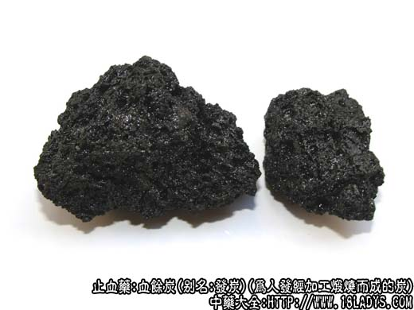

本品为少常用中药，始载《名医别录》，原来名乱发。《本草纲目》释名血余。李时珍说：“发者血之余......”。今血余不直接入药，须洗净煅炭后始供药用，名为“血余炭”。
别名：发炭。
来源：为人发经加工煅烧而成的炭。
加工方法：收集理发剪下的头发，用碱水或皂角水洗净污垢，再用清水漂净，捞出，晾干。取净头置煅锅内，上面覆盖一锅，两锅接合处，用黄泥封固，上面锅底贴白纸，用文武火煅贴在锅底上的白纸显焦黄色为度，待凉后，取出，砍成小块即得。
产地：全国各地均可制做。
性状鉴别：本品呈不规则块状，大小不等，色乌黑而光亮。表面稍平坦并有多数小孔，状似海绵。折断面呈蜂窝状。体质轻松，易碎。用火烧之有焦发气，味苦。
以体轻，色黑有光泽，无杂质者为佳。
主要成分：含炭素。
药理作用：收敛止血。动物实验证实能缩短出血、凝血时间和血浆再钙化时间。另有利尿作用。
炮制：原品药用。
性味：苦、微温。
归经：入心、肝、肾经。
功能：消瘀、止血。
主治：吐血、衄血、血痢、血淋、崩漏等症。
临床应用：广泛用于治疗各种出血。但较多用于崩漏和吐血。例如月经过多者可配莲蓬炭、侧柏叶加补中益气汤，火配当归炭、首乌、益母草等，方如血余归母汤。治虚证吐血也可用此方加减。
使用注意：内有瘀血积热者不宜用本品。
用量：一般研成极细末冲服，每服0.9～3g。入煎剂用6～15g。